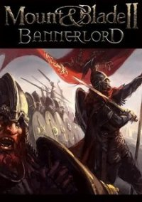
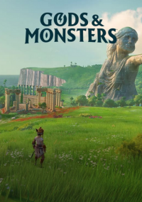

Cyberpunk 77
Cyberpunk 77 - это игра от CD Project RED, причем отошедшая от мира фэнтези и средневековья к будущему и киберпанковскому сеттингу. События игры разворачиваются в мире настольной RPG Cyberpunk 2020, однако временные рамки сдвинуты к 2077 году. В центре внимания - протагонист с лаконичным именем Ви, который занимается различной деятельностью на грани закона, хотя в Найт-Сити закон давно существует лишь на бумаге.
Игрокам доступно огромное количество уникального оружия, различных технических гаджетов, а также умений на все случаи жизни. Из оригинальной настольной игры Cyberpunk 2077 позаимствовала и концепцию классов персонажей, правда, перенесены из оригинальной настолки оказались далеко не все классы. Игра также предлагает игрокам определиться со своей историей происхождения, которая влияет на различные события, наличие или отсутствие определенных NPC - словом, все как в настольной игре Cyberpunk 2020.

Mount & Blade 2: Bannerlord
Mount & Blade 2: Bannerlord - это вторая часть серии Mount and Blade, которая предлагает игроку борьбу за власть в жестоком средневековом открытом мире. Игроков ждут масштабные сражения, которые прибавили в зрелищности и брутальности. Игра была анонсирована еще в 2012 году, однако очень быстро превратилась в долгострой и провалилась в "производственный ад".
События игры разворачиваются за 200 лет до Mount & Blade: Warband. Игроков ждет период падения Кальрадийской империи и становление независимых королевств, которые появляются в предыдущих играх. Иными словами, авторы взяли историю падения Древнего Рима и адаптировали под мир своей игры. После гибели императора Кальрадии по всей стране вспыхнули сражения - игрокам же отводится роль одного из воинов на этом поле боя, который может как помочь восстановить империю, так и окончательно ее разрушить.
Gods & Monsters
Gods & Monsters - это приключенческая ролевая игра, вдохновленная Breath of the Wild и греческой мифологией. Игрокам в роли персонажа по имени Феникс предстоит помочь богам древнего мира освободиться от некоего проклятия, для чего необходимо пройти по различным землям (включая загробный мир), разгадывая загадки, сражаясь с монстрами и становясь сильнее с каждым поверженным врагом и выполненным заданием.
